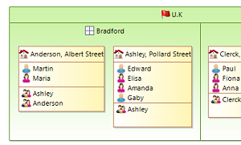

Smarter Diagrams and Better User Experience
This release comes with many ergonomic improvements for a better edition of diagrams.
Anchor on borders
Now the edges are linked closely to the images. You only need to use images with a transparent background.

Underline and strike through
In the Appearance tab, in addition to Bold and Italic, it is now possible to set the font formatting style to Underline and Strike through.

Compartments
Containers now support vertical and horizontal compartments layout, thanks to new possible values for Children Presentation attribute.

Tree and table
Keyboard shortcuts were added on table and tree: refresh (F5), quick outline (Ctrl+O) and line deletion (Del).
Background image
On diagrams, it is now possible to set a custom background image on list containers.
Container label visibility
When users need to simplify their diagram, now they can hide the label of containers.
Easier and Faster Query Language: AQL
Sirius 3.0 introduces AQL (Acceleo Query Language), a new language that makes your life easier writing expressions for querying EMF models.
Usable as a new query language in Sirius configuration files, AQL is a simplified and optimized variant of Acceleo / OCL. The implementation has been specifically tailored for the Sirius context, providing much better performance.
AQL expressions start with the aql: prefix and have a syntax similar to Acceleo (without the enclosing [../] brackets). This new syntax is very easy to learn: if you know OCL, you already know AQL!
The following example shows how an Acceleo 3 expression can be simplified with AQL:
- With Acceleo: [if father.oclIsUndefined() then '' else father.name endif/]
- With AQL: aql:self.father.name
Better Performance and Memory Consumption
This release comes with lots of performance improvements, also including reduced memory consumption. This was tested and validated with models composed of more than 1 million elements.
Here is a list of major works done for Sirius 3.0:
- Big operations (open, save, close, etc.): the model footprint was reduced by 20% and the save strategy was reviewed.
- Right-click latency: selecting an object in the project explorer was optimized for large models.
- Properties edition: property views made with EEF are better integrated to greatly improve performances.
- Refresh: the refresh operation was improved for diagrams, trees and tables.
- Image caches: diagrams with a lot of images scale better.
Stronger Modeling Tools
With Sirius 3.0.0, potential problems when creating a new Sirius-based modeler are detected earlier:
- Java services can be defined and tested directly in your current development environment.
- A selection wizard guarantees the valid specification of images path.
- A quick Outline is now available to easily find any element in a odesign. Just hit Ctrl+O.
- Validation of Sirius configuration file was improved to be more complete and precise.
The complete list of changes is available here: http://www.eclipse.org/sirius/doc/Release_Notes.html#sirius3.0.0.
Read What's new in Sirius 2.0 to see the new and noteworthy features of previous version.